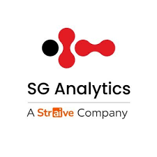

SG Analytics
Data Scientist
Production pipeline (client-facing)
In progress
Agentic financial model builder
- Building an AI agent that turns SEC EDGAR filings for public and private companies into a complete, client-ready financial model in the client's custom template: income statement, balance sheet and cash-flow statement, forecasts, a revenue build and a DCF valuation.
Completed · maintained for daily delivery
Company risk-monitoring pipeline
- Architected and own an end-to-end, client-facing production AI pipeline tracking 200+ companies across 91 global locations: an ETL process that extracts, deduplicates and loads news data for classification and daily client delivery.
- Cut per-request latency 97% (2 s → 50 ms) with prompt caching, and reduced inference cost 33% by productionizing a custom ML model I trained for multi-label classification across 55 risk categories (92% accuracy, 91% F1).
- Diagnose and resolve client-facing pipeline issues (data gaps, misclassifications, delivery failures) with under 1-hour turnaround, keeping daily delivery accurate and client trust intact.
Client demos (quick prototyping)
- Engineered an Ontology RAG demo for a regulatory banking client, built on OKF (Open Knowledge Format) with LanceDB for vector storage. It enables structured multi-hop reasoning over unstructured documents, with 48% lower token cost and 40% faster retrieval than standard flat-vector retrieval.
- Built a fraud-ring detection demo for financial transactions: an ML anomaly-detection model across 40+ transaction-level and behavioural parameters that identifies coordinated fraud beyond single-transaction anomalies.